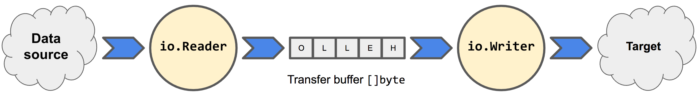

поставим главную задачу
Программа должна иметь возможность передать данные кому-то еще
Нам, как программистам, нужен некий механизм передачи данных
Каким образом это можно сделать?
- файловая система
- сетевое взаимодействие
- передача из одной области памяти в другую
Передача данных
Что это с технической точки зрения?

Типы потоков
По направлению движения данных потоки делят на две группы:
- поток ввода (Input) — данные поступают из потока в нашу программу.
- поток вывода (Output) - данные поступают в поток из нашей программы.
Тип передаваемых данных
Вторым критерием разделения может служить ТИП передаваемых данных.
Байты не всегда являются удобным вариантом передачи — есть еще текст
В итоге мы получаем 4 типа потоков
Для каждого из этих типов Java предлагает отдельный базовый абстрактный класс.
- InputStream — поток для чтения байтов (поток ввода)
- OutputStream — поток для записи байтов (поток вывода)
- Reader — поток для чтения символов (поток ввода)
- Writer — поток для записи символов (поток вывода)
Основные методы read() и write()
Схема работы с потоком в упрощенном виде
1. Создается экземпляр потока
2. Поток открывается (для чтения или записи)
3. Производится чтение из потока/запись в поток
4. Поток закрывается

Решим задачу — записи строки в файл
В текстовый файл. Какой поток нам потребуется?
- InputStream — поток для чтения байтов (поток ввода)
- OutputStream — поток для записи байтов (поток вывода)
- Reader — поток для чтения символов (поток ввода)
- Writer — поток для записи символов (поток вывода)
Reader и Writer — абстрактные классы. Для работы c файлами будем использовать конкретные FileReader и FileWriter